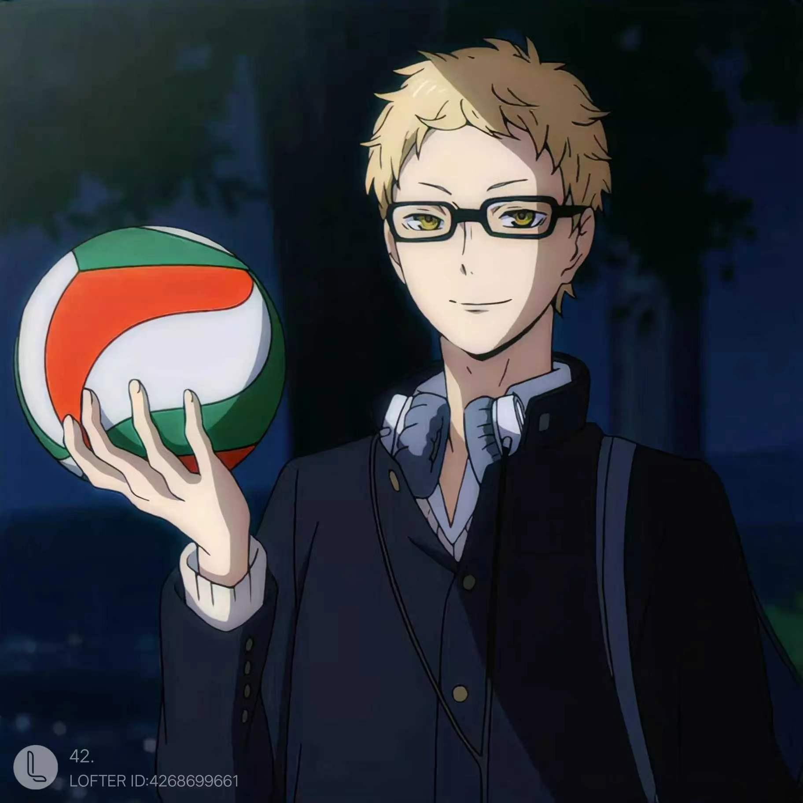
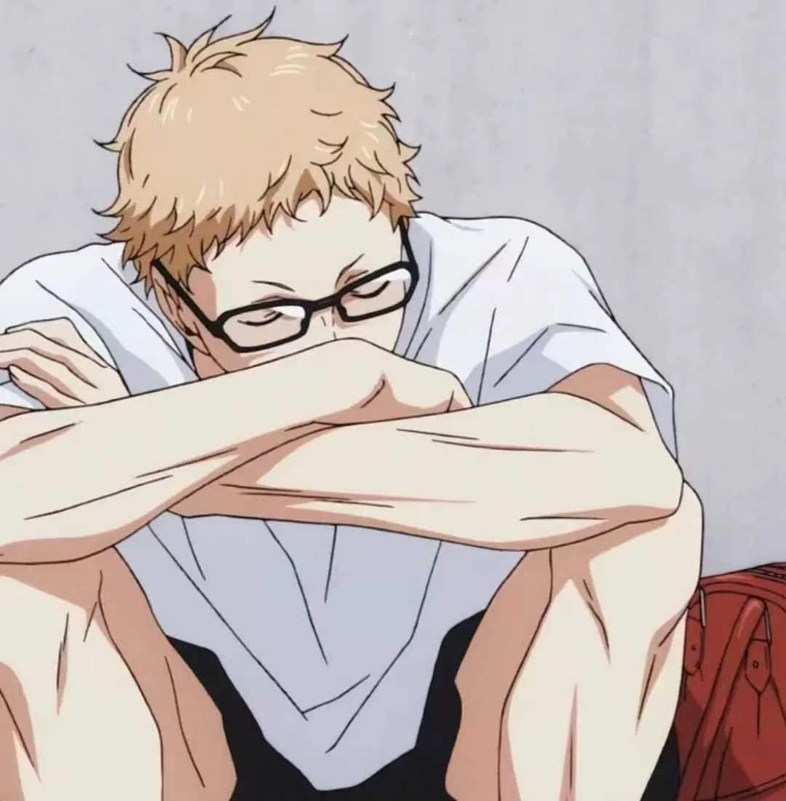

李思颖 2023-10-12
人生漫漫，总有那么一部运动番让你热血沸腾，久久难以忘怀。
或许是因为青春，或许是因为友情，又或许，是因为那样一个熠熠生辉的角色。 今天，我们就来聊一聊《排球少年》主角团乌野高中的高个子副攻——月岛萤。
温馨提示：可搭配BGM食用哦！
1996年9月27日出生的月岛萤是天秤座， 古馆老师在构思月岛时的确有考虑到和日向相对位置的他代表月亮， 但名字的萤则是古馆老师寄情于月岛，不是只反射日光的月，而是可以自己发光的萤火。
身高出众的月岛家大儿子明光喜欢上了排球，初中时作为王牌的明光是月岛萤心中的偶像， 当哥哥在赛场上有出色发挥时，兄弟二人会互相比出剪刀手作为庆祝的暗号。 想和哥哥一样帅气的萤也努力练习排球，被他路过救下的雀斑男孩吹捧时， 萤很享受这种因为帅气而被崇拜的感觉，直到他和同学们见到为了让弟弟骄傲而吹牛的明光 ——乌野高中的王牌是10号的二年级小个子。
月岛开始怀疑努力是否存在意义，带着疑问的他仍旧选择了让哥哥颜面扫地的乌野。 此时今非昔比的乌野排球社极度缺人，这也让此刻打心底里认为不过是社团活动的月岛凭借着过人的身高占有一个首发位置。 无论怎样努力都无法成为世界第一，那就意味着再努力最后都会在别人面前失败， 那就索性游刃有余的拿到不输大多数人的分数，然后让外人觉得“假如他努力，是不是超强……？” 这样输给强者也可以说我还没努力，这样就可以让自己处于舆论上不败的地位了。 虽然因为哥哥的过往让月岛秉持这样的心态，可当同龄人要超越自己时，秉性上的好胜心又会让他不甘。
古馆老师狠狠鞭策着月岛， 在跟青城的对决中，有“大王”之称的及川第一次发球就对准了他，并且残忍地追发； 研磨展示自己区别于影山的二传技巧，第一次就戏耍了月岛； 木兔也在面对他的拦网后说你这手臂太细了，感觉一球就能打折； 也包括黑尾的那句——你就不怕小不点风头压过你吗？
这句话正好戳破了乌野两位副攻的现状。 在队内日向是大家都认为的新手，对排球一腔热情却技术青涩； 而月岛身高不错，也不像菜鸟。 然而在外队看来情况正相反，日向是会敏捷“闪现”和拥有惊人的弹跳力的“诱饵”， 而月岛是没什么特点的大个子。 研磨和及川都说月岛理智又聪明，但是除此以外也找不到什么优点了。
即使被古馆老师这样“虐待”，月岛依旧没有离开排球。 故事的最后月岛不仅仅成为了二级联赛仙台蛙的副攻，博学的他还在大学毕业后在仙台博物馆就职。 曾让哥哥无法释怀的排球，有着让他也无法舍弃的魅力。
月岛打心底里是想要表现自己，可他又觉得努力的尽头不尽人意， 初始阶段的月岛没有融入球队，赛前全队的鼓舞呐喊他不出声，比赛过程里他也只想着不出错就好， 当乌野输给青城后，饭桌上连没有登场的缘下都哭了，月岛没有落泪。
聪明但不愿意努力的孩子总有一个幻想，自己某一天抓到一个机会，肯定可以一鸣惊人。 自己和那些被认为优秀的人差的不是天赋与能力仅仅是个机会。 如果月岛是这样的人，那么课上早早记完笔记看着天空的他表情不会若有所思。 月岛可以用敷衍了事应付外界的看法，但却不能无视心中那未熄灭的火。 虽然相比于小时候已经微弱到一吹就灭，但那自他身躯发出的微光，比他平日里反射日光的能量要浓烈的多。
看上去比自己还要渺小的山口，却比自己更快地找到了奔跑的理由。 友人吹散了月亮周围的乌云，可月岛还是没有解开心中的疑惑。
森然高中三馆里，木兔告诉月岛，找到属于自己的那一刻你就会爱上排球。
在与绝对强队白鸟泽对决时，月岛抓住对手失误， 绝对强者牛若那一丝丝的急躁成了他最大的突破口， 他做到了，他拦网封杀了牛若!
下面让我们一起来回顾月岛封杀牛若超燃名场面
"不过是一次普通的拦网，不过是25分中普通的一分，不过是一个普通的社团活动"
向来理性的少年忘记了为何握紧挡住对手的左拳，纵情享受自己爱上排球的那一刻。
这一球没让白鸟泽早早拿到赛点局，这一球让压抑了两局的乌野逆转了局势，这一球更是让月岛对日向做出了 直接回应：我可以说自己不行，但我并不是真的不行。
聪明的孩子在没想明白问题前，确实显得很别扭， 可若你知道他是个负责任的好伙伴，还是给他一点时间让他成长吧。
月岛萤等待爱上排球的瞬间用了整整163话，经历了16载春夏，古馆老师用了将近四年的时间为此铺垫。 可即便他把最激动人心的时刻留给了月岛，我们仍然无法在所能看到的故事里，找到他作为乌野最后攻防的画面。
他是注定只能站在太阳对角的月亮，他的设定完全相反于作为故事线索、绝对的主角日向。
但当他忍着伤痛也要把胜利带给乌野,我们望着大地、草原、河流与谷地， 旭日升起言之过早，绚烂的夕阳刚刚燃烧，正午的烈阳无法永远同在。 乌云若是恰好当空，这人间一定还有那点点萤火，愿为照亮长夜不息燃烧。
想要更加了解月岛萤吗？！请戳下方链接
爱上排球的瞬间